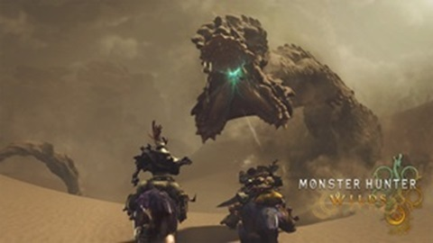

Accueil
-
Monster Hunter est un jeu de chasse (un peu comme indiqué dans le nom) ou les monstres qu'il faut chasser sont énorme et leur violance sont de même. Le jeu existant depuis 2004, il possède un plutôt grand gabarit de monstre pour avoir des centaines d'heures de jeu. Le but principale des jeux est de chasser un monstre spécial mais les raisons change entre chaques jeux. Cepandant, sur certain jeux, l'hisoire passe un peu par la fenêtre pour devenir un jeu ou on chasse les monstres pour se faire une nouvelle paire de botte. Les jeux sortent à chques deux ans et entre temps, il y a du contenu additionnel qui ce rajoute. À chaques quattre ans, le jeu vas introduire une nouvelle génération et il est possible de séparer les sorties en deux catégories. La plus importante, celle qui introduit les nouveaux montres, est considérer comme étant l'entrer principale et la deuxième est considérer comme étant l'entrer pour console portable. La différence la plus notable entre les deux c'est que l'entrer principale vas plus ce pousser sur la cohérence du monde, essayer de faire croire aux joueurs que les monstres introduit peuvent exister et que leurs habitat n'est pas fait au hazard. Tandis que, l'entrer portable est plus pousser vers le combat rapide et la fantasie. Même si les partis durent en général ving minutes, les animations de combat et les mécanique de combat pousse le jeu à être plus arcade et plus rapide.
-
Une nouvelle vidéo démontrant le katana en action et ses nouvelles mchaniques est sortie!!!
-
Une nouvelle vidéo démontrant les doubles lames en action et ses nouvelles méchaniques est sortie!!!
-
Une nouvelle vidéo démontrant la lance en action et ses nouvelles méchaniques est sortie!!!